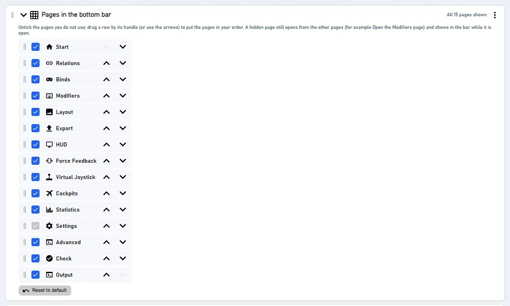

#Старонка праекта
КнопкаапісанаПадказка Адкрывае ў браўзеры афіцыйную старонку выпуску кампанента
На картцы кампанента: адкрывае ў вашым браўзеры афіцыйную старонку рэлізаў кампанента, дзе яго ўласны праект апісвае яго і прапануе спампоўкі.
Старонка «Налады» змяшчае ўсе налады JoyPro ў 25 раздзелах, якія адкрываюцца і закрываюцца. Поле пошуку знаходзіць наладу па слове («вобласць апавяшчэнняў», «абнаўленне», «фота»), укладкі ўверсе пераходзяць да раздзела, і вы можаце расставіць раздзелы ў сваім парадку. Кожная налада захоўваецца адразу і застаецца пасля перазапуску; кнопкі «Захаваць» няма.


Пры першым запуску адкрыты толькі раздзел Гульні; усё астатняе — за адзін націск. Большасці людзей заўсёды патрэбны толькі Гульні, Выгляд, Мова і Пра JoyPro і абнаўленні.
| Раздзел | Што вы там наладжваеце |
|---|---|
| Гульні | Якія гульні ў вас ёсць, звязаныя папкі, назіральнік за канфігурацыямі гульняў, прылада vJoy, якую выкарыстоўвае JoyPro |
| Прывязкі | Сачэнне за ўводам, запіс кнопак, якія застаюцца націснутымі |
| Туры | Вітанне, рэжым даведкі (F1) і кожны тур, каб пачаць зноў |
| Запуск | Адкрываць апошні профіль пры запуску |
| Старонкі на ніжняй панэлі | Схаваць старонкі, змяніць іх парадак |
| Мова | Мова JoyPro |
| Выгляд | Светлыя, цёмныя або вашы ўласныя колеры, памер тэксту, маштаб інтэрфейсу, рэдактар тэм |
| Праца ў фоне | Памочнік у вобласці апавяшчэнняў, які працягвае сачыць за вашымі гульнямі |
| Пацвярджэнні | Пытанні, якія JoyPro задае перад зменай |
| Пра JoyPro і абнаўленні | Версія, старонка праекта, абнаўленні |
| Прыватнасць | Фота вытворцаў, пакеты малюнкаў, вокладкі гульняў |
| Статыстыка выкарыстання | Старонка «Статыстыка», рэйтынг вашых самых выкарыстоўваных лятальных апаратаў |
| Запіс тэлеметрыі | Запіс вашых палётаў, як у Tacview |
| Схемы | Як JoyPro малюе вашы прылады; скід вашых змен раскладкі |
| Паведаміць пра праблему | Адзін zip-архіў з усім, што патрэбна, каб знайсці праблему |
| Лакальны ШІ | Дадатковая моўная мадэль |
| Кампаненты | vJoy, HidHide, ViGEmBus і іншыя дадатковыя праграмы |
| Прылады | Вашы прылады, іх назвы, замена або выдаленне прылады |
| Спісы каманд (DB) і шляхі да гульняў | Інфармацыя для экспертаў |
| DCS: прывязкі па змаўчанні | Уласныя стандартныя прывязкі DCS ва ўсталёўцы DCS |
| Спісы каманд DCS, Star Citizen і IL-2 | Экспертныя абнаўленні спісаў каманд |
| Налады зваротнай сувязі па сіле гульняў | Уласныя параметры зваротнай сувязі па сіле ў гульнях |
| Зваротная сувязь па сіле DCS: перастаноўка і інверсія | Напрамак зваротнай сувязі па сіле DCS для кожнай прылады |


Адна картка на кожную гульню, якую падтрымлівае JoyPro і якая ў вас ёсць, з яе вокладкай, «Усталявана» або «Не ўсталявана», дзе яна знаходзіцца і дзе захоўвае сваё кіраванне.
gui.vromfs.bin і lang.vromfs.bin гульні толькі для чытання, каб атрымаць кожнае дзеянне самалётаў і верталётаў. Калі выключана: толькі ўласны спіс JoyPro з вядомымі яму дзеяннямі War Thunder.Тут у гульні нічога не мяняецца. Звязаная папка вызначае, адкуль імпарт чытае і куды экспарт піша; схаваная гульня не атрымлівае карткі экспарту, і за ёй не сочаць.


Ваш адказ на пытанне майстра налады Вы карыстаецеся трэкінгам галавы або VR? З трэкінгам галавы (TrackIR, вэб-камера з трэкінгам твару, айтрэкер Tobii) або VR вы азіраецеся, паварочваючы галаву.
Усе туры JoyPro ў адным месцы (Рэжым даведкі і туры):


Адкрываць апошні профіль пры запуску (па змаўчанні ўключана) адкрывае профіль, які быў адкрыты апошнім; шлях паказаны ніжэй. Заўвага тлумачыць гісторыю профілю: кожная змена захоўваецца сама, і кожнае захаванне — гэта версія ў Гісторыя (верхняя панэль). Старыя версіі прарэджваюцца: усе за апошні дзень, потым адна за гадзіну на працягу 7 дзён, адна за дзень на працягу 60 дзён, далей адна за тыдзень; не больш за 200 MB на профіль і 1 GB на ўсе. Версіі, якія вы пакінулі, застаюцца.


Адзін радок на кожную старонку ніжняй панэлі. Здыміце сцяжок са старонкі, якой не карыстаецеся; перацягніце радок за ручку (або скарыстайцеся стрэлкамі), каб змяніць парадак. Схаваная старонка ўсё роўна адкрываецца з іншых старонак (напрыклад, Адкрыць старонку «Мадыфікатары») і паказваецца на панэлі, пакуль адкрыта. Налады схаваць нельга. Скінуць да стандартных вяртае парадак JoyPro з паказам усіх старонак.


Мова JoyPro: англійская і яшчэ 38 моў, або Мова Windows (мова інтэрфейсу Windows або англійская, калі ў JoyPro яе няма). Пераклады зроблены машынай і могуць гучаць дзіўна; назвы каманд гульняў застаюцца такімі, як іх называе гульня. Меню памочніка ў вобласці апавяшчэнняў выкарыстоўвае тую ж мову.


JoyPro можа заўважыць, што вы змянілі кіраванне ў гульні, толькі пакуль ён працуе. Маленькі памочнік працягвае сачыць у выглядзе значка ў вобласці апавяшчэнняў пасля таго, як вы закрылі JoyPro; ён не дае прыкметнай нагрузкі на працэсар і займае некалькі MB памяці.


JoyPro пытаецца перад зменай, якую цяжка адмяніць. Пытанні, якія можна выключыць, пералічаны тут: выдаленне дзеяння са сувязі, імпарт, які адкідвае змены, якія вы яшчэ не экспартавалі, першы экспарт у гульню, з якой профіль ніколі не імпартаваў, экспарт, які выдаляе прывязкі, і падказка пра назіральнік пры імпарце. Пытанне, якое вы выключылі праз «Больш не пытаць», паказваецца тут без сцяжка; Спытаць пра ўсё зноў уключае іх усе назад.


Версія, зборка і радок ліцэнзіі, Старонка праекта і Старонка рэлізаў, апавяшчэнні пра староннія кампаненты і абнаўленні: Праверыць абнаўленні, Усталяваць абнаўленне (спампоўвае новую версію, правярае яе, усталёўвае і перазапускае JoyPro), Правяраць абнаўленні пры запуску і Прапанаваць зноў для версіі, якую вы прапусцілі. «Адкуль бяруцца абнаўленні (для экспертаў)» называе рэпазіторый GitHub, рэлізы з якога ўсталёўвае JoyPro.


У JoyPro няма ўліковага запісу і няма тэлеметрыі. Ён выходзіць у інтэрнэт толькі для праверкі абнаўленняў, фота прадуктаў ад вытворцаў (пасля вашай згоды), вокладак гульняў, якіх няма на гэтым ПК, дадатковай спампоўкі мадэлі ШІ, дадатковых драйвераў і адсутнага .NET Framework.


JoyPro адзначае, якімі гульнямі, лятальнымі апаратамі і караблямі вы карыстаецеся, па ўласных журналах гульняў і часе гульні ў Steam, і захоўвае зводку на гэтым ПК.


Запісвае кожны раўнд, місію або палёт з усёй тэлеметрыяй, якую адпраўляе гульня (становішча, арыентацыя, скорасці, органы кіравання, рухавікі, узбраенне, падзеі), як Tacview робіць для DCS, для кожнай гульні, тэлеметрыю якой чытае JoyPro.


Як JoyPro малюе вашы прылады на старонцы «Раскладка» і на картках прылад (лініі або cel-shading, колеры JoyPro або вашы ўласныя), асобна для экрана і для шпаргалак і экспарту. Скінуць усе мае змены раскладак... вяртае малюнак кожнай прылады да стандартнага ў JoyPro (вашы пазіцыі маркераў, табліцы і лініі, перайменаваныя часткі, фота, уласныя апісанні прылад і файлы раскладкі, якія выкарыстоўвае профіль; самі файлы застаюцца); Адмяніць скід адразу пасля гэтага вяртае іх. Для адной прылады: старонка «Раскладка», яе меню Мадэль.... Элементы кіравання схемай апісаны на старонцы Раскладка.


Захоўваць фонавыя журналы n дзён (па змаўчанні 30; разам не больш за 200 MB) і Адкрыць папку журналаў знаходзяцца ніжэй.


Неабавязкова. Аўтаномныя правілы JoyPro працуюць заўсёды; бясплатная моўная мадэль з адкрытым кодам можа дадаткова разумець вольныя сказы ў «Кіраваць з ШІ», «Рэдагаваць з ШІ», памочніку JoyPro і «Групаваць па апісанні», а JoyPro правярае кожны адказ. Яна працуе на гэтым ПК толькі тады, калі вы яе выкарыстоўваеце.
llama-server.exe і файла .gguf, Знайсці на гэтым ПК, Выкарыстаць гэтыя файлы, Перастаць выкарыстоўваць.


Шукаць зноў паказвае картку для кожнай падключанай ручкі кіравання, РУД і педаляў і для кожнай прылады, якую выкарыстоўвае ваш профіль: яе малюнак (націсніце, каб адкрыць прыладу на старонцы «Раскладка»), назву, падключана ці не і колькі ў яе прывязак.


Адказы толькі для чытання на панэлі «Вывад» пра тое, што JoyPro ведае пра кожную гульню: Зводка DB, Праверка DB, Спіс DB, Гульні DB, Самалёты DB, Адбітак DB, Шляхі гульняў, Спіс гульняў, Выяўленне гульняў, з фільтрамі па гульні і лятальным апараце. Каб прачытаць новыя каманды гульні пасля абнаўлення, выкарыстайце Абнавіць на картцы гульні на старонцы «Старт».


DCS ставіць свае ўласныя прывязкі па змаўчанні на кожную прыладу. Экспарт JoyPro для DCS ужо выдаляе іх з кожнай прылады, на якую ён піша, на кожным лятальным апараце. Два параметры тут мяняюць саму ўсталёўку DCS, для ўсіх прылад; абодва выключаныя, пакуль вы іх не ўключыце.
<file>.nocombo.bak. Захаваць прывязкі пласта UI па змаўчанні (меню, VR) пакідае пласт UI як ёсць.Гэтыя параметры мяняюць уласныя файлы DCS. Некаторыя шматкарыстальніцкія серверы не пускаюць вас, пакуль яны ўключаныя; Аднавіць файлы DCS вяртае файлы DCS назад. Абнаўленне або выпраўленне DCS вяртае арыгінальныя файлы; JoyPro зноў ужывае параметр пры сваім наступным запуску.


Звычайна спіс гульні ствараецца кнопкай Абнавіць на яе картцы на старонцы «Старт». Тут: толькі некаторыя лятальныя апараты DCS, пробны запуск без запісу і стары рэжым пстрыкаў.


Кожная налада зваротнай сувязі па сіле, якую прапануе гульня (моц, эфекты, для кожнай прылады і, у DCS, для кожнага лятальнага апарата). JoyPro захоўвае зададзеныя вамі значэнні ў профілі і запісвае іх у гульню пры экспарце; налады, якія вы не захоўваеце, застаюцца такімі, як у гульні. Выберыце Гульня, Прылада і Лятальныя апараты (усе лятальныя апараты або адзін, значэнні якога маюць перавагу), змяніце значэнні, потым Ужыць. Вярнуць адкідвае неўжытыя змены, Не задана ў радку спыняе захаванне адной налады, Ачысціць выдаляе ўсе паказаныя захаваныя налады. Уласная зваротная сувязь па сіле JoyPro з тэлеметрыі — на старонцы Зваротная сувязь па сіле.


Калі ваша ручка кіравання з FFB штурхае не ў той бок у DCS: адзначце для яе Swap Axis, Інвертаваць X або Інвертаваць Y, потым Ужыць. Ачысціць вяртае прыладзе налады DCS па змаўчанні. Табліца прылад з фільтрамі (Толькі падлучаныя, Толькі профіль), кнопкамі выбару і Ужыць выбранае / Ачысціць выбраныя / Ачысціць усе; «Manual single-device (advanced)» задае адну прыладу па назве.
DCS чытае напрамак зваротнай сувязі па сіле для кожнай прылады пры запуску: прылада з перастаўленымі або інвертаванымі восямі штурхае ў іншы бок на кожным лятальным апараце.
%APPDATA%\JoyPro2\ui-settings.json (акно, старонкі, адкрытыя раздзелы і іх парадак, тэма, мова, пацвярджэнні, адказы пра прыватнасць, вобласць апавяшчэнняў, выбар лакальнага ШІ ...), запісваецца адразу пры кожнай змене; тэмы — файлы JSON побач з ім. Мадэль выгляду: MainWindowViewModel.SettingsPage.cs (раздзелы, пошук, парадак; SettingsSectionDefaults утрымлівае id, загалоўкі і ключавыя словы пошуку), элементы Views/Controls/SettingsSection.cs, SettingsSectionsPanel.cs, SettingsTabStrip.cs.engine games installs, engine games install set, engine games install disable, engine games config set (MainWindowViewModel.GameInstalls.cs, GameSetup.cs).MainWindowViewModel.NavPages.cs; выгляд: MainWindowViewModel.Appearance.cs, Services/ThemeService.cs; мова: MainWindowViewModel.Language.cs (Лакалізацыя).MainWindowViewModel.Updates.cs (Абнаўленні); справаздача: MainWindowViewModel.AppServices.cs, engine support bundle (Журналы).engine usage harvest, engine usage ranking, engine usage pin (Статыстыка выкарыстання); запіс тэлеметрыі: MainWindowViewModel.TelemetryRecording.cs, engine telemetry sessions, engine telemetry export (Запіс тэлеметрыі).engine llm status, engine llm download, engine llm use-local, engine llm start (Групаванне на натуральнай мове); кампаненты: MainWindowViewModel.Components.cs (Кампаненты).engine devices list, engine devices inputs, engine devices exchange, engine devices remove, engine games devices (Прылады).engine dcs strip-defaults, engine dcs device-luas, engine dcs defaults restore (MainWindowViewModel.DcsDefaults.cs); спісы каманд: engine dcs refresh id, engine dcs refresh clean, engine db refresh-starcitizen, engine db refresh-il2; экспертныя адказы DB: engine db summary, engine db check, engine db list, engine db games, engine db planes, engine db fingerprint, engine games paths, engine games list, engine games detect.engine ffb models, engine ffb show, engine ffb set, engine ffb clear (захоўваецца ў профілі, запісваецца пры экспарце; MainWindowViewModel.FfbSettings.cs); перастаноўка/інверсія ў DCS: engine dcs ffb list, engine dcs ffb set, engine dcs ffb clear.Дакументацыя функцый за гэтай старонкай, створаная з рэпазіторыя:
190 элементаў кіравання, прачытаных з зыходнага кода праграмы: 190 апісана, 0 з фактамі з кода (падказка, каментарый у кодзе, выклік рухавіка), 0 яшчэ трэба дапоўніць.
Падказка Адкрывае ў браўзеры афіцыйную старонку выпуску кампанента
На картцы кампанента: адкрывае ў вашым браўзеры афіцыйную старонку рэлізаў кампанента, дзе яго ўласны праект апісвае яго і прапануе спампоўкі.
Падказка Выпраўленне або выдаленне: адкрывае спіс усталяваных праграм Windows, дзе ёсць уласны дэінсталятар кампанента
На картцы ўсталяванага кампанента: адкрывае спіс усталяваных праграм Windows.
Там адрамантуйце або выдаліце кампанент яго ўласным дэўсталёўшчыкам; JoyPro сам кампаненты не выдаляе.
На картцы кампанента: адкрывае ў вашым браўзеры ліцэнзію кампанента на яго афіцыйнай старонцы праекта.
Пастаўце тут птушку, каб сказаць «так». Тады JoyPro можа ўсталяваць памочніка.
Пастаўце тут птушку, каб сказаць «так»: JoyPro можа спампаваць і ўсталяваць гэтага бясплатнага памочніка.
«Усталяваць» працуе толькі з гэтай птушкай.
Спампоўвае і ўсталёўвае гэтага бясплатнага памочніка. Спачатку паставіць птушку.
Спампоўвае і ўсталёўвае гэтага бясплатнага памочніка: кнопка «Усталяваць» з назвай кампанента.
Працуе толькі пасля птушкі «Я прачытаў ...», таму спачатку пастаўце гэту птушку.
Паказваецца, пакуль спампоўваецца кампанент: спыняе спампоўку.
Усталёўшчык, які ўжо працуе, JoyPro не спыняе; скарыстайцеся «Скасаваць» у яго ўласным акне.
Падказка Укл.: x каля дзеяння спачатку пытаецца «Прыбраць гэта дзеянне?». Выкл.: яго прыбіраюць адразу (Ctrl+Z адмяняе).
Укл.: крыжык дзеяння на старонцы «Сувязі» спачатку пытаецца «Прыбраць гэта дзеянне?».
Выкл.: дзеянне выдаляецца адразу; Ctrl+Z усё роўна вяртае яго.
Падказка Укл.: Імпарт на картцы гульні спачатку пытаецца, калі ў профілі ёсць змены для гэтай гульні, якіх яшчэ няма ў гульні (Спачатку экспартаваць, Імпарт, Скасаваць). Выкл.: імпартуе адразу (Гісторыя верне змены).
Укл.: «Імпарт» на картцы гульні спачатку пытаецца, калі ў вашым профілі ёсць змены для гэтай гульні, якіх яшчэ няма ў гульні, з «Спачатку экспартаваць», «Імпарт» і «Скасаваць».
Выкл.: імпартуе адразу; «Гісторыя» профілю ўсё роўна мае версію з таго, што было раней.
Укл.: першы экспарт гульні, з якой гэты профіль ніколі не імпартаваў, пытаецца «Спачатку імпартаваць?», каб уласныя прывязкі гульні не згубіліся нечакана.
Выкл.: экспартуе адразу.
Укл.: экспарт, які выдаляе прывязкі, адзін раз пытаецца перад запісам.
Выкл.: ён адразу запісвае.
Укл.: імпарт паказвае падказку, што JoyPro можа сачыць за гульнёй, каб заўважаць змены кіравання, якія вы робіце ў гульні.
Выкл.: падказка схавана.
Падказка Усе выключаныя пытанні будуць задавацца зноў
Зноў адзначае ўсе пытанні гэтага раздзела, каб з гэтага моманту JoyPro зноў задаваў кожнае.
Даступна, толькі пакуль хоць адно пытанне выключана.
Падказка Уключае лакальны ШІ з наладжанай мадэллю; яна загрузіцца з наступным запытам
На плашцы «Лакальны ШІ» побач з дзеяннямі ШІ, паказваецца, калі мадэль наладжана, але выключана: уключае лакальны ШІ з гэтай мадэллю адной пстрычкай; яна загружаецца пры вашым наступным запыце.
Без мадэлі замест гэтага адкрывае «Налады > Лакальны ШІ».
Падказка Адкрывае «Налады > Лакальны ШІ»: спампаваць мадэль (спачатку памер і ліцэнзія) або выкарыстаць свой llama.cpp
«Наладзіць лакальны ШІ» на плашцы «Лакальны ШІ»: адкрывае «Налады > Лакальны ШІ» і пракручвае да яго, дзе вы спампоўваеце мадэль або паказваеце JoyPro ваш уласны llama.cpp.
Само па сабе нічога не змяняе.
Падказка Адразу завяршае лакальную мадэль ШІ і вызваляе яе памяць (наступны запыт загрузіць яе зноў)
«Спыніць зараз», паказваецца, пакуль лакальная мадэль ШІ загружана: адразу завяршае мадэль і вызваляе яе памяць.
Лакальны ШІ застаецца ўключаным; наступны запыт да ШІ зноў загрузіць мадэль.
Падказка Укл.: пакуль запушчана гульня з спісу ніжэй і адпраўляе тэлеметрыю, JoyPro піша адзін файл на раунд, місію ці палёт. Выкл.: нічога не запісваецца і не шукаецца.
Па змаўчанні выключана. Укл.: пакуль адзначаная гульня працуе і адпраўляе тэлеметрыю, JoyPro запісвае адзін запіс на раўнд, місію або палёт у папку ніжэй.
Выкл.: нічога не запісваецца, і JoyPro не шукае запушчаныя гульні.
Падказка Куды захоўваць запісы, на любым дыску (з дастатковым месцам: гадзіна займае прыкладна 10-50 МБ)
«Папка» > «Выбраць...»: выбірае, куды ідуць новыя запісы, на любым дыску.
Спіс «Запісаныя сеансы» тады паказвае запісы гэтай папкі; існуючыя запісы не пераносяцца.
Падказка Вярнуцца да папкі даных JoyPro
Паказваецца, калі вы выбралі ўласную папку: новыя запісы зноў ідуць у папку даных JoyPro, а спіс паказвае запісы там.
Запісы ў вашай папцы застаюцца там, дзе яны ёсць.
Адкрывае ў Правадніку папку запісаў.
Падказка Уласныя пакеты, адказы і файлы гульні побач са значэннямі, для інструментаў, якія іх чытаюць. Прыкладна ўдвая больш па памеры.
Па змаўчанні ўключана: кожны запіс таксама захоўвае ўласныя пакеты, адказы і файлы гульні побач са значэннямі, для інструментаў, якія іх чытаюць.
Тады запіс прыкладна ўдвая большы.
Адна гульня запісу тэлеметрыі: адзначаныя гульні запісваюцца, пакуль яны працуюць і адпраўляюць тэлеметрыю.
Радок ніжэй кажа, што JoyPro слухае для гэтай гульні.
Зноў чытае спіс запісаных сеансаў з папкі запісаў.
Падказка Файл .zip.acmi, які адкрывае Tacview: трэк, становішча, хуткасці і іншыя аб'екты, пра якія паведаміла гульня. Толькі для гульняў, тэлеметрыя якіх мае пазіцыю.
Запісвае выбраны запіс як файл .zip.acmi, які адкрывае Tacview, у папку Exports побач з запісамі і паказвае яго ў Правадніку.
Толькі для гульняў, тэлеметрыя якіх мае пазіцыю.
Падказка Папка з адной табліцай усіх значэнняў па момантах часу, падзеямі, спісам каналаў і маленькім файлам на кожны канал (праз коску, дзесятковая кропка).
Запісвае выбраны запіс як папку файлаў CSV у папку Exports побач з запісамі: адна табліца з усімі значэннямі на кожны момант, падзеі, спіс каналаў і адзін невялікі файл на канал.
Праваднік адкрывае папку.
Выдаляе выбраны запіс.
Крыжык у «Пошук у наладах»: ачышчае пошук, каб зноў паказваліся ўсе раздзелы.
Разгортвае ўсе раздзелы старонкі «Налады».
Якія раздзелы адкрыты, запамінаецца для наступнага запуску.
Згортвае ўсе раздзелы, каб старонка паказвала толькі іх загалоўкі; адкрыйце патрэбны, пстрыкнуўшы па ім.
Маленькая стрэлка побач з «Адкрыць усе» / «Закрыць усе»: вяртае раздзелы ў парадак JoyPro, адкрытым застаецца толькі «Гульні».
Новы парадак захоўваецца для наступнага запуску.
Падказка Светлыя колеры
Адразу паказвае JoyPro у светлых колерах.
Захоўваецца для наступнага запуску.
Падказка Цёмныя колеры
Адразу паказвае JoyPro у цёмных колерах.
Захоўваецца для наступнага запуску.
Падказка Ісці за наладай Windows
JoyPro ідзе за наладай Windows для праграм.
Захоўваецца для наступнага запуску.
Падказка Паказаць JoyPro у гэтай тэме
«Выкарыстаць» на адной з вашых уласных тэм: адразу паказвае JoyPro у гэтай тэме.
Захоўваецца для наступнага запуску.
Падказка Адкрыць яе ў рэдактары тэм ніжэй
«Праўка» на адной з вашых уласных тэм: адкрывае яе копію ў рэдактары тэм ніжэй.
Нічога не змяняецца, пакуль вы не націснеце «Захаваць» або «Выкарыстаць гэтую тэму».
Падказка Памер тэксту тэмы або 100 %
«Скінуць» побач з «Памер тэксту»: адкідае выбраны вамі памер тэксту, каб зноў ужываўся памер тэксту тэмы, што выкарыстоўваецца, або 100 %, калі ў яе яго няма.
Падказка Вярнуць 100 %
«Скінуць» побач з «Маштаб інтэрфейсу»: усё акно вяртаецца да 100 %.
Рэдактар тэм: пачынае новую тэму са светлых колераў JoyPro і адкрывае яе ў рэдактары з жывым папярэднім праглядам.
Як файл яна захоўваецца толькі праз «Захаваць» або «Выкарыстаць гэтую тэму».
Рэдактар тэм: пачынае новую тэму з цёмных колераў JoyPro і адкрывае яе ў рэдактары.
Падказка Файл тэмы (.json), якім з вамі падзяліліся
Рэдактар тэм: выбірае файл тэмы, якім з вамі падзяліліся.
JoyPro правярае яго, капіюе ў сваю папку тэм і адкрывае ў рэдактары; радок над рэдактарам кажа, што імпартавана або чаму не.
Частка жывога папярэдняга прагляду рэдактара тэм: узор кнопкі, які паказвае, як выглядаюць кнопкі ў рэдагаванай тэме.
Яна нічога не робіць.
Частка жывога папярэдняга прагляду рэдактара тэм: узор акцэнтнай кнопкі.
Яна нічога не робіць.
Частка жывога папярэдняга прагляду рэдактара тэм: узор неактыўнай кнопкі.
Яна нічога не робіць.
Частка жывога папярэдняга прагляду рэдактара тэм: узор кнопкі старонкі ніжняй панэлі.
Яна нічога не робіць.
Частка жывога папярэдняга прагляду рэдактара тэм: узор кнопкі старонкі, паказаны выбраным.
Яна нічога не робіць.
Частка жывога папярэдняга прагляду рэдактара тэм: узор кнопкі старонкі ніжняй панэлі.
Яна нічога не робіць.
Падказка Робіць колеры тэксту святлейшымі або цямнейшымі, пакуль увесь тэкст не стане чытэльным
Паказваецца, калі праверка кантрасту знаходзіць цяжкія для чытання тэксты: робіць колеры тэксту рэдагаванай тэмы святлейшымі або цямнейшымі, пакуль кожны тэкст не стане чытэльным, і кажа, колькі колераў змянілася.
Захоўваецца толькі праз «Захаваць» або «Выкарыстаць гэтую тэму».
Падказка Захоўвае яе і паказвае JoyPro у ёй
Захоўвае рэдагаваную тэму і адразу паказвае JoyPro у ёй.
Захоўваецца для наступнага запуску.
Захоўвае рэдагаваную тэму як файл у папцы налад JoyPro.
Калі гэта тэма, што выкарыстоўваецца, акно адразу паказвае змену.
Робіць копію рэдагаванай тэмы і адкрывае копію ў рэдактары — для варыянта тэмы, якая вам падабаецца.
Падказка Захаваць тэму ў файл, каб падзяліцца ёю
Захоўвае рэдагаваную тэму як файл .json у выбраным вамі месцы, каб захаваць копію або падзяліцца ёю; іншыя загружаюць яе праз «Імпарт...».
Падказка Усе колеры назад як у базавай тэме, а шрыфты — як у JoyPro
Вяртае кожны колер рэдагаванай тэмы да тэмы, на якой яна заснавана; шрыфты таксама вяртаюцца да шрыфтоў JoyPro.
Назва застаецца, а файл тэмы змяняецца толькі праз «Захаваць» або «Выкарыстаць гэтую тэму».
Выдаляе файл рэдагаванай тэмы. Калі гэта была тэма, што выкарыстоўваецца, JoyPro вяртаецца да ўбудаванай тэмы.
Падказка Налада першага запуску: якія ў вас гульні, падлучаныя папкі (партатыўныя ўсталёўкі) і месцы канфігурацый
Зноў шукае вашы гульні і адкрывае акно першага запуску: адзначце гульні, якія ў вас ёсць, падключыце папкі партатыўных усталёвак і задайце іншыя месцы канфігурацыі.
Нічога не змяняецца, пакуль вы не націснеце там «Гатова».
Зноў шукае вашы гульні, напрыклад пасля таго, як вы ўсталявалі або перанеслі гульню, і абнаўляе карткі тут, старонку «Старт» і старонку «Экспарт».
Падказка Калі вы мяняеце ў гульні органы кіравання, якімі кіруе JoyPro, JoyPro пасля закрыцця гульні пытае, ці браць іх у ваш профіль
Па змаўчанні ўключана: калі вы змяняеце ў гульні кіраванне, якім кіруе JoyPro, JoyPro заўважае гэта пасля закрыцця гульні і пытаецца, ці перанесці змены ў ваш профіль.
Сачэнне вядзецца за гульнямі, у якія вы экспартавалі або з якіх імпартавалі і якія адзначаны для сачэння на старонцы «Старт».
Падказка Укл. (па змаўчанні): JoyPro распакоўвае gui.vromfs.bin і lang.vromfs.bin (толькі чытанне) для кожнага дзеяння самалёта і верталёта. Выкл.: JoyPro выкарыстоўвае толькі ўласны спіс вядомых дзеянняў War Thunder.
Па змаўчанні ўключана: калі JoyPro будуе спіс каманд War Thunder, ён распакоўвае gui.vromfs.bin і lang.vromfs.bin гульні для кожнага дзеяння самалётаў і верталётаў.
Выкл.: JoyPro выкарыстоўвае толькі свой уласны спіс вядомых яму дзеянняў War Thunder.
Падказка Файлы HLL Vietnam сціснуты Oodle, а ўласнай бібліятэкі Oodle гульня не пастаўляе. З вашым «так» JoyPro выкарыстоўвае тую, што пастаўляе іншая гульня на гэтым ПК (з месца, дзе яна ляжыць, ніколі не капіруецца). Выкл.: уласны спіс клавіш геймпада JoyPro, чаго цалкам хапае для рэжыму геймпада Xbox.
Ваш адказ на пытанне, якое JoyPro задае, калі будуе спіс каманд Hell Let Loose: Vietnam: калі адзначана, JoyPro чытае сціснутыя файлы гульні з дапамогай бібліятэкі Oodle, якая пастаўляецца з іншай усталяванай гульнёй, з таго месца, дзе яна ёсць.
Калі не адзначана: уласны спіс клавіш геймпада ў JoyPro — гэта ўсё, што патрэбна рэжыму геймпада Xbox.
Забывае ваш адказ пра файлы Hell Let Loose: Vietnam; JoyPro спытае зноў, калі наступным разам будзе будаваць спіс каманд гэтай гульні.
Падказка Гэта папка тады лічыцца ўсталёўкай гульні (папка гульні, папка яе лаўнчара або яе папка bin)
«Выбраць папку...» на картцы гульні: падключае папку гульні.
Папка лаўнчара або bin таксама падыходзіць; JoyPro падключае для яе папку гульні.
Падказка Выберыце .exe гульні або яе лаўнчар; JoyPro звяжа папку гульні
«Выбраць .exe...» на картцы гульні: выберыце праграму гульні або яе лаўнчар; JoyPro падключае для яе папку гульні, як «Выбраць папку...».
Падказка Забыць вашу папку і зноў выявіць гульню
«Выкарыстаць выяўленае» на картцы гульні з вашай уласнай папкай: забывае спасылку, і JoyPro зноў сам знаходзіць гульню.
Файлы гульні не кранаюцца.
Падказка У вас яе няма або яна вам не цікавая: схавана ўсюды ў JoyPro (карткі, экспарт, сачэнне, спісы гульняў); лічыцца неўсталяванай. Вашы прывязкі да яе захоўваюцца.
«Схаваць» на картцы гульні: для гульні, якой у вас няма або якая вас не цікавіць.
Яна хаваецца ўсюды ў JoyPro і лічыцца неўсталяванай; вашы прывязкі для яе застаюцца ў профілі.
Падказка Націсніце кнопку (або моцна пасуньце вось), і старонка «Прывязкі» ці «Сувязі» пяройдзе да яе сувязі; націсніце зноў для наступнай сувязі на ёй, спачатку без мадыфікатараў. Не падчас запісу і набору тэксту ў полі.
Па змаўчанні ўключана: націсніце кнопку, і старонка «Прывязкі» або «Сувязі» пераскочыць да яе сувязі; націсніце зноў, каб перайсці да наступнай сувязі на ёй, спачатку тыя, што без мадыфікатараў.
Не падчас запісу або ўводу ў поле, і толькі пакуль акно JoyPro на пярэднім плане.
Падказка Кароткая падказка ўнізе спіса (BTN 8 на WarBRD: Gear) пасля пераходу за ўводам. Спіс пераходзіць і калі опцыя выключана.
Па змаўчанні выключана: пасля таго як сачэнне за ўводам пераскочыла, кароткая нататка ўнізе спіса кажа, што было націснута.
Спіс пераскоквае і з ёй, і без яе.
Падказка «Запісаць» бярэ толькі кнопку, што змяняе стан; кнопка, ужо націснутая на пачатку запісу (сярэдзіна 3-пазіцыйнага пераключальніка, пераключальнік рэжымаў), не ўлічваецца ніколі. З пазнакай: адпушчэнне залічваецца як гэта кнопка.
Па змаўчанні выключана: запіс прымае толькі кнопку, якая змяняе стан, таму кнопка, ужо націснутая на пачатку запісу, ніколі не лічыцца.
Калі адзначана: адпусканне такой кнопкі лічыцца гэтай кнопкай.
Падказка Укл.: пад супадзеннямі па назве ідуць «Тая ж функцыя» (тая ж функцыя, знойдзеная па сіноніме або апісанні) і «Падобныя» (згорнута). Выкл.: толькі дзеянні, назва якіх утрымлівае ўсе ўведзеныя словы. Той жа пераключальнік ёсць побач з Усе / Восі / Кнопкі.
«Налады > Сувязі», па змаўчанні ўключана: пошук «Дадаць дзеянні» таксама паказвае дзеянні, якія робяць тое, што азначаюць вашы словы, і менш дакладныя — пад дзеяннямі, у назве якіх ёсць кожнае ўведзенае вамі слова.
Выкл.: толькі гэтыя супадзенні па назве.
Выберыце гэта, калі вы азіраецеся, рухаючы галавой.
Выберыце гэта, калі вы азіраецеся з дапамогай трэкінгу галавы, айтрэкера Tobii або VR, ці плануеце яго набыць.
Кожная наступная налада тады не ставіць у авіясімулятарах кнопак віду ці агляду на ваш HOTAS, толькі кнопку цэнтравання віду, каб вашы кнопкі заставаліся вольнымі для іншых функцый.
Выберыце гэта, калі вы азіраецеся праз Hat на ручцы кіравання.
Выберыце гэта, калі вы азіраецеся ручкай кіравання або РУДам.
Кожная наступная налада ставіць агляд на Hat або міні-сцік з высокім прыярытэтам: адразу пасля гарматы, скіду ўзбраення, контрмер, тармазоў, трымера і мэты.
Падказка Адкрывае майстар налады для гэтых сімулятараў
Нанава наладжвае вашы сімулятары з новым адказам.
Паказваецца пасля змены адказу: адкрывае майстар налады для ўсталяваных сімулятараў, якіх датычыць адказ, каб нанава наладзіць там агляд.
Ваш профіль зменіцца толькі тады, калі вы ўжывяце новы план.
Паказвае або хавае гэту старонку на ніжняй панэлі.
Схаваная старонка ўсё роўна адкрываецца з іншых старонак і паказваецца, пакуль яна адкрыта.
Перамяшчае гэту старонку на адно месца ўверх у спісе, гэта значыць на адно месца ўлева на ніжняй панэлі.
Парадак захоўваецца для наступнага запуску.
Перамяшчае гэту старонку на адно месца ўніз у спісе, гэта значыць на адно месца ўправа на ніжняй панэлі.
Падказка Парадак старонак JoyPro, усе старонкі паказаны
Вяртае старонкі ніжняй панэлі ў парадак JoyPro і зноў паказвае ўсе старонкі.
Падказка Пытанне першага запуску: што вы хочаце зрабіць і які тур падыходзіць
Зноў паказвае вітанне з усімі турамі.
«Паказаць вітанне» зноў адкрывае пытанне першага запуску: што вы хочаце зрабіць?
Выберыце адказ, і JoyPro запусціць тур або хуткую наладу, якія вам падыходзяць.
Падказка Пстрыкніце па чым заўгодна, каб даведацца, што яно робіць; F1 або Esc завяршае рэжым
Пстрыкнуць тут, потым па любой кнопцы, каб даведацца, што яна робіць.
«Рэжым даведкі» ўключае рэжым даведкі: пстрычка па любой кнопцы, полі, радку спіса або ўкладцы больш не запускае яе, а паказвае, што яна робіць.
F1, Esc або «Выйсці з рэжыму даведкі» ўверсе завяршаюць яго.
Падказка Вітанне з'явіцца зноў пры наступным запуску, і ніводны тур не будзе лічыцца прагледжаным
Вітанне з'явіцца зноў пры наступным запуску.
«Спытаць зноў пры наступным запуску» робіць так, што вітанне зноў пакажацца, калі JoyPro запусціцца наступным разам.
Кожны тур зноў лічыцца непрагледжаным; ваш профіль і іншыя налады застаюцца як ёсць.
Падказка Буйны тэкст і вельмі кароткія сказы ў турах і даведцы. Добра для дзяцей і для ўсіх, хто хоча прасцей.
Буйны тэкст і кароткія сказы ў турах і даведцы.
Простыя словы: буйныя карткі і самыя кароткія тэксты ў турах, а даведка па F1 пачынаецца з аднаго простага сказа, падрабязнасці — пад «Больш падрабязнасцей».
Захоўваецца адразу і застаецца пасля перазапуску.
Падказка Туры ніжэй паказваюць толькі патрэбныя крокі
«Толькі галоўнае»: тур, запушчаны са спіса ніжэй, паказвае толькі патрэбныя крокі.
Дадатковае, напрыклад рэжым упору ў туры па DCS, прапускаецца.
Падказка Туры ніжэй паказваюць кожны крок, у тым ліку дадатковыя
«Усе магчымасці»: тур, запушчаны са спіса ніжэй, паказвае ўсе крокі, у тым ліку дадатковыя.
Ваш выбар захоўваецца пасля перазапуску.
Падказка Пачынае гэты тур
Запускае гэты тур.
«Пачаць тур» пачынае гэты тур: ён зацямняе акно, прымушае свяціцца кнопку, пра якую ідзе гаворка, і чакае вашай пстрычкі.
Хуткі тур паказвае, дзе пазней змяніць кнопку; сама хуткая налада — гэта «Наладзіць усё за мяне» на старонцы «Старт».
Падказка JoyPro адкрывае профіль, які быў адкрыты апошнім, адразу пасля паказу акна. Здыміце птушку, каб пачынаць без адкрытага профілю.
Па змаўчанні ўключана: JoyPro адкрывае профіль, які быў адкрыты апошнім, адразу пасля таго, як з'яўляецца яго акно; яго шлях паказаны ніжэй.
Калі не адзначана: JoyPro запускаецца без адкрытага профілю.
Падказка Памочнік вобласці апавяшчэнняў запускаецца сам пры ўваходзе ў Windows; акно JoyPro не адкрываецца. Правы адміністратара не патрэбны; здыміце птушку, каб зноў прыбраць яго з аўтазапуску Windows.
Па змаўчанні выключана. Укл.: невялікі памочнік у вобласці апавяшчэнняў запускаецца сам, калі вы ўваходзіце ў Windows, і працягвае сачыць за вашымі гульнямі; акно JoyPro не адкрываецца.
Калі адзначыць, таксама адзначаецца «Закрываць у вобласць апавяшчэнняў».
Падказка Закрыццё JoyPro (X) пакідае памочніка ў вобласці апавяшчэнняў наглядаць за вашымі гульнямі. Здыміце птушку, і закрыццё JoyPro спыняе таксама назіранне.
Пры закрыцці JoyPro сачэнне за гульнямі перадаецца памочніку ў вобласці апавяшчэнняў, які застаецца ў сістэмным трэі і займае некалькі МБ памяці.
Калі адзначыць, памочнік запускаецца адразу.
Падказка JoyPro на GitHub: зыходны код, рэлізы, справаздачы пра праблемы
Адкрывае ў вашым браўзеры старонку праекта JoyPro на GitHub: зыходны код, рэлізы і паведамленні пра праблемы.
Падказка Кожны рэліз са спісам змен
Адкрывае ў вашым браўзеры рэлізы JoyPro на GitHub: кожны рэліз з тым, што змянілася.
Падказка Пытаецца ў GitHub апошні рэліз JoyPro; навейшы прапануецца разам са спісам змен
Пытае ў GitHub апошні рэліз JoyPro і заўсёды кажа, што знайшоў: навейшая версія прапануецца з апісаннем змен, інакш — «JoyPro2 актуальная».
Версія, якую вы прапусцілі, таксама прапануецца тут.
Падказка Спампоўвае новую версію, правярае яе, усталёўвае і зноў запускае JoyPro
Пасля таго як праверка знайшла навейшую версію: спампоўвае яе, правярае спампоўку, закрывае JoyPro, усталёўвае новую версію і зноў запускае JoyPro, з прагрэсам у акне абнаўлення.
Вашы профілі і налады застаюцца.
Падказка Пры кожным запуску JoyPro адзін раз пытаецца ў GitHub, ці ёсць новая версія, і пытаецца ў вас, перш чым абнаўляцца
Па змаўчанні ўключана: пры кожным запуску JoyPro адзін раз пытае ў GitHub, ці ёсць навейшая версія, і паказвае прапанову, толькі калі яна ёсць.
Ён ніколі не абнаўляецца без вашай пстрычкі.
Вы выбралі «Прапусціць гэту версію» ў прапанове абнаўлення: гэта забывае выбар, і наступная праверка зноў прапануе версію.
Падказка Забыць «так» / «не», што вы далі для кожнай прылады; JoyPro спытае зноў, перш чым паказаць фота вытворцы
Забывае «так» або «не», якія вы далі для кожнай прылады наконт фота прадукту ад вытворцы, і JoyPro зноў спытае, перш чым спампаваць яго.
Радок побач лічыць вашы адказы.
Падказка Калі з'яўляецца прылада, фота-ўзораў якой няма на гэтым камп'ютары, JoyPro спампоўвае іх у фоне з зыходнага адраса (або з вэб-архіва, калі адраса больш няма), правярае кожнае і захоўвае яго ў вашай папцы даных. Выкл.: JoyPro прапануе іх і чакае вашага пстрыкання.
Укл.: калі з'яўляецца прылада, фота-ўзораў якой няма на гэтым ПК, JoyPro спампоўвае іх у фоне з арыгінальнага адраса, правярае кожнае і захоўвае ў вашай папцы даных.
Выкл.: JoyPro прапануе іх і чакае вашай пстрычкі.
Падказка Вокладкі гульняў, малюнка якіх у Steam на гэтым ПК няма, спампоўваюцца адзін раз з крамы Steam або сайта выдаўца (крыніцы медыя рухавіка). Выкл.: значкі JoyPro і малюнкі, што ўжо ёсць на гэтым ПК. Уступае ў сілу пры наступным запуску.
Вокладкі гульняў, для якіх у Steam няма малюнка на гэтым ПК, адзін раз спампоўваюцца з крамы Steam або сайта выдаўца.
Выкл.: значкі JoyPro і малюнкі, якія ўжо ёсць на гэтым ПК.
Падказка Гадзіны па гульнях, лятальных апаратах і караблях, топ-10, серыі, забойствы, пасадкі, скачкі, ваш профіль у часе і цікавыя факты
Па змаўчанні выключана: паказвае старонку «Статыстыка» на ніжняй панэлі з гадзінамі па гульнях, лятальных апаратах і караблях, топ-10, серыямі, перамогамі, пасадкамі, скачкамі, вашым профілем з цягам часу і цікавымі фактамі.
Захоўваецца для наступнага запуску.
Падказка Аўтапрызначэнне, Аўтагрупаванне, майстар наладкі і «Раскласці з ШІ» даюць апарату, на якім вы яшчэ не лёталі, раскладку вашага самага выкарыстоўванага апарата яго класа (знішчальнікі, верталёты, касмічныя караблі). Замацуйце апарат ніжэй, каб ён стаў узорам.
Па змаўчанні ўключана: «Аўтапрызначэнне», «Аўтагрупаванне», «Майстар налады» і «Раскласці з ШІ» даюць лятальнаму апарату, на якім вы яшчэ не лёталі, раскладку вашага найбольш ужывальнага лятальнага апарата яго класа; «Замацаваць» ніжэй выбірае ўзор.
Выкл.: яны раскладваюць яго без гэтага ўзору.
Чытае тое, што вашы гульні запісалі ў журналы з мінулага разу, і абнаўляе рэйтынг і старонку «Статыстыка».
Звычайна гэта адбываецца пры запуску і пасля закрыцця гульні.
«Замацаваць» / «Адзамацаваць» у радку рэйтынгу: замацаваны лятальны апарат служыць узорам для новых лятальных апаратаў свайго класа, калі «Аўтапрызначэнне», «Аўтагрупаванне», «Майстар налады» або «Раскласці з ШІ» раскладваюць іх.
У гульні: лятальныя апараты, раскладзеныя пасля гэтага, атрымліваюць раскладку кнопак замацаванага лятальнага апарата.
«Выключыць» / «Улічваць» у радку: выключаны лятальны апарат або гульня больш не ўлічваецца ў рэйтынгу.
Вяртае малюнак кожнай прылады да стандартнага ў JoyPro: вашы пазіцыі маркераў, табліцы і лініі, перайменаваныя дэталі, фота, уласныя апісанні прылад і файлы раскладак, якія выкарыстоўвае профіль.
Спачатку пытаецца; «Адмяніць скід» адразу пасля гэтага вяртае ўсё.
«Адмяніць скід»: вяртае змены раскладкі, якія прыбраў апошні скід.
Паказваецца толькі адразу пасля скіду.
Па змаўчанні ўключана: «Стварыць справаздачу» таксама кладзе ў zip ваш адкрыты профіль, яго гісторыю і цяперашнія файлы прывязак гульняў, што найбольш дапамагае знайсці праблему.
Выкл.: справаздача іх не ўключае.
Спачатку паказвае, што трапіць у справаздачу, потым захоўвае на гэтым ПК адзін zip з вашым тэкстам з «Што адбылося?» і тым, што патрэбна, каб знайсці праблему, і вылучае яго ў Правадніку.
Ваша папка карыстальніка і імя замяняюцца, адрасы e-mail і паролі выдаляюцца; нічога не адпраўляецца.
Паказвае zip, створаны «Стварыць справаздачу», вылучаным у Правадніку, каб далучыць яго або спачатку зазірнуць унутр.
Адкрывае ў вашым браўзеры новую праблему на старонцы JoyPro на GitHub з упісаным вашым апісаннем; перацягніце туды zip са справаздачай у поле тэксту праблемы.
JoyPro нічога не загружае ў сетку.
Адкрывае ў Правадніку папку журналаў JoyPro: фонавыя журналы інтэрфейсу і рухавіка і журнал сеанса панэлі «Вывад».
Уключае або выключае неабавязковую лакальную мадэль ШІ для ўсіх дзеянняў ШІ.
Выкл.: толькі афлайн-правілы JoyPro, якія працуюць заўсёды.
Падказка Загружае мадэль зараз, каб наступны запыт да ШІ атрымаў адказ адразу (яна спыніцца пасля хвілін прастою)
Загружае лакальную мадэль ШІ зараз, каб ваш наступны запыт да ШІ атрымаў адказ адразу; яна зноў спыняецца пасля хвілін прастою.
Патрабуе, каб лакальны ШІ быў уключаны і гатовы; інакш радок стану кажа чаму.
Зноў пытаецца ў рухавіка, што наладжана і працуе, і абнаўляе радкі стану.
Ваша «так» на памер спампоўкі і ліцэнзіі, паказаныя вышэй, для выбранай мадэлі і llama.cpp.
«Спампаваць і ўключыць» працуе толькі з гэтай птушкай.
Падказка Спампоўвае llama.cpp і мадэль, правярае кантрольныя сумы SHA-256 і ўключае лакальную мадэль ШІ
Спампоўвае llama.cpp і выбраную мадэль, правярае іх кантрольныя сумы SHA-256 і ўключае лакальны ШІ, з прагрэсам ніжэй.
Працуе толькі з адзначаным «Я згодны з памерам і ліцэнзіямі вышэй».
Спыняе бягучую спампоўку мадэлі. Ужо спампаваная частка захоўваецца; «Спампаваць і ўключыць» працягвае спампоўку.
Выдаляе выбраную спампаваную мадэль з гэтага ПК, каб вызваліць месца.
Выбірае ваш уласны llama-server.exe. Потым націсніце «Выкарыстаць гэтыя файлы».
Выбірае ваш уласны файл мадэлі .gguf. Потым націсніце «Выкарыстаць гэтыя файлы».
Падказка Шукае llama-server.exe і мадэлі GGUF у звычайных папках (толькі чытанне) і выбірае пару, што пасуе гэтаму ПК
Шукае llama-server.exe і мадэлі GGUF, якія ўжо ёсць на гэтым ПК, у звычайных папках і ўпісвае пару, якая падыходзіць гэтаму ПК.
Потым націсніце «Выкарыстаць гэтыя файлы».
Падказка Цяпер лакальны ШІ запускае ваш llama-server.exe з гэтым файлам GGUF (нічога не спампоўваецца)
З гэтага моманту лакальны ШІ запускае ваш уласны llama-server.exe з выбраным файлам GGUF і ўключаны; нічога не спампоўваецца.
«Перастаць выкарыстоўваць» вяртае да спампаванай мадэлі.
Перастае выкарыстоўваць ваш уласны llama.cpp і файл GGUF; лакальны ШІ зноў выкарыстоўвае спампаваную мадэль.
Вашы файлы застаюцца там, дзе яны ёсць.
«Патрэбна для JoyPro» > «Праверыць зноў»: зноў правярае, ці ўсталяваны кампаненты, патрэбныя рухавіку, а потым — ці сапраўды рухавік запускаецца, як пры запуску праграмы.
«Усталяваць адсутныя» даступна, калі адсутнічае нешта, што яна можа ўсталяваць.
Усталёўвае з афіцыйнай крыніцы тое, што патрэбна самому JoyPro і чаго не хапае, потым зноў правярае, ці запускаецца рухавік.
Падказка Глядзіць, што ўсталявана і працуе (толькі чытанне)
«Неабавязкова» > «Праверыць зноў»: глядзіць, якія неабавязковыя праграмы ўсталяваны, у якой версіі і ці працуюць іх драйверы, і абнаўляе карткі.
Толькі для чытання.
Падказка Адкрывае «Налады > Лакальны ШІ»
«Наладзіць» на картцы лакальнага ШІ ў раздзеле «Кампаненты»: адкрывае «Налады > Лакальны ШІ», дзе мадэль мае ўласную спампоўку з памерам, ліцэнзіяй і кантрольнай сумай.
Падказка Вашы падлучаныя ручкі, РУД і педалі, і прылады, якія выкарыстоўвае ваш профіль
Чытае вашы падключаныя ручкі кіравання, РУД і педалі і прылады, якія выкарыстоўвае ваш профіль, і паказвае для кожнай картку: яе малюнак, назву, падключана або не і колькі ў яе прывязак.
Толькі для чытання.
Падказка Прылады, якім вы далі назву на старонцы «Раскладка», паказваюцца пад гэтай назвай (сапраўдная назва — у падказцы)
«Назвы прылад:» прылады, якім вы далі назву на старонцы «Раскладка», паказваюцца ў JoyPro пад гэтай назвай; сапраўдная назва — у падказцы.
Экспарт заўсёды выкарыстоўвае сапраўдную прыладу.
Падказка Кожная прылада паказваецца пад назвай, якую ёй дае Windows
«Назвы прылад:» кожная прылада паказваецца пад назвай, якую ёй дае Windows, нават калі вы далі ёй назву на старонцы «Раскладка».
Малюнак карткі прылады: адкрывае прыладу на старонцы «Раскладка» з яе малюнкам, маркерамі і прывязкамі.
Падказка Аналагавая клавіятура паведамляе пра свае клавішы таксама як пра восі: пры наборы тэксту яны рухаюцца. JoyPro не ўлічвае яе восі пры сачэнні за ўводам і запісе восей, калі гэта адзнака не пастаўлена. Яе клавішы і кнопкі ўлічваюцца заўсёды.
На картцы аналагавай клавіятуры: яе клавішы таксама паведамляюцца як восі, таму набор тэксту рухаў бы іх.
JoyPro не ўлічвае гэтыя восі пры сачэнні за ўводам і запісе восі, калі гэта не адзначана; клавішы і кнопкі ўлічваюцца заўсёды.
Падказка Перадаць прывязкі гэтай прылады іншай прыладзе, уваход за ўваходам, з папярэднім праглядам
«Замяніць...» на картцы: адкрывае акно, якое перадае кожную прывязку і мадыфікатар прылады іншай прыладзе, уваход за ўваходам, з папярэднім праглядам, напрыклад новай ручцы кіравання або профілю са старога ПК.
Нічога не пераносіцца да «Перанесці прывязкі» там, што спачатку пытаецца і захоўвае копію профілю побач з ім; «Адмяніць» вяртае перанос назад.
Падказка Выдаліць прывязкі гэтай прылады з вашага профілю (спачатку пытаецца)
«Выдаліць» на картцы прылады, якую выкарыстоўвае ваш профіль: выдаляе з профілю кожную прывязку і мадыфікатар гэтай прылады; сувязі застаюцца.
Спачатку пытаецца і захоўвае копію профілю побач з ім.
Запаўняе спісы «Падлучаныя прылады» і «Прылады профілю» ніжэй назвамі прылад так, як іх бачыць рухавік.
Запаўняе «Каталог уваходаў» усімі назвамі ўваходаў, якія ведае JoyPro.
Падказка Падлучаныя прылады з VID:PID, назвай HID і іх восямі, кнопкамі і Hat у DirectInput (на панэлі вываду)
Паказвае на панэлі «Вывад» падключаныя прылады з VID:PID, назвай HID і іх восямі, кнопкамі і Hat DirectInput.
Толькі чытанне; карысна для паведамлення пра праблему з прыладай.
Пераносіць кожную прывязку і мадыфікатар прылады, уведзенай у «Старая прылада», на прыладу ў «Новая прылада», назвы ўваходаў не змяняюцца.
Для перанясення з памочнікам і папярэднім праглядам скарыстайцеся «Замяніць прыладу...».
Выдаляе з профілю кожную прывязку і мадыфікатар прылады, уведзенай у полі; сувязі застаюцца.
У гульні: пасля наступнага экспарту ў прылады няма прывязак ад JoyPro.
Параўноўвае спіс каманд кожнага лятальнага апарата DCS з яго профілем DCS clean і паказвае лічбы на панэлі «Вывад»: спісы лятальных апаратаў, адсутныя профілі clean, назвы, супастаўленыя толькі па псеўданіме.
Іншыя гульні не правяраюцца.
Тое ж параўнанне, што і «Зводка DB», плюс спіс лятальных апаратаў DCS без профілю clean на панэлі «Вывад»; паведамляе пра памылку, калі такі профіль адсутнічае.
Толькі для чытання.
Паказвае на панэлі «Вывад» запісы спіса каманд, якія адпавядаюць «Фільтр самалётаў».
Толькі для чытання.
Паказвае ў «Гульні DB» гульні, для якіх у JoyPro ёсць спісы каманд.
Толькі для чытання.
Паказвае ў «Самалёты DB» лятальныя апараты гульні з «Самалёты гульні».
Толькі для чытання.
Паказвае на панэлі «Вывад» адбітак спісаў каманд, каб параўнаць два ПК або дзве версіі.
Толькі для чытання.
Паказвае на панэлі «Вывад», дзе JoyPro знайшоў кожную гульню і яе папкі канфігурацыі.
Толькі для чытання.
Паказвае на панэлі «Вывад» усе гульні, якія падтрымлівае JoyPro.
Толькі для чытання.
Выконвае пошук гульняў і паказвае на панэлі «Вывад», што знойдзена і як.
Толькі для чытання.
Запаўняе пустыя або няправільныя папкі DCS Saved Games і ўсталёўкі папкамі, якія JoyPro знаходзіць на гэтым ПК.
Зададзеныя вамі папкі, якія існуюць, захоўваюцца.
Падказка У кожным файле ўводу джойсцікаў DCS прывязкі па змаўчанні выключаюцца (combos = nil); арыгінал захоўваецца як <file>.nocombo.bak.
Па змаўчанні выключана. Укл.: ва ўсіх файлах уводу joystick усталёўкі DCS прывязкі па змаўчанні выключаюцца, для ўсіх прылад; кожны арыгінал захоўваецца як <file>.nocombo.bak.
Спачатку пытаецца; перад гэтым закрыйце DCS.
Падказка Пакідае пласт UI (Config > Input > UiLayer) такім, якім яго пастаўляе DCS
Выкарыстоўваецца, калі ўключана «Прыбраць прывязкі DCS па змаўчанні»: пласт інтэрфейсу захоўвае свае прывязкі па змаўчанні такімі, як іх пастаўляе DCS.
Калі змяніць гэта, пакуль прыбіранне ўключана, файлы ўводу DCS ствараюцца зноў з новым выбарам.
Падказка Файлы кшталту «Joystick - HOTAS Warthog.lua» пераносяцца ў папку рэзервовых копій JoyPro, і DCS выкарыстоўвае default.lua для кожнай прылады (як рабіў JoyPro 1). Файлы, якія выкарыстоўвае іншы файл DCS, застаюцца на месцы, гэтак жа як і файлы VR-кантролераў пласта UI.
Па змаўчанні выключана. Укл.: файлы DCS па змаўчанні для асобных прылад пераносяцца ў папку рэзервовых копій JoyPro, каб DCS выкарыстоўваў сваю простую стандартную наладу для кожнай прылады; файлы, якія выкарыстоўвае іншы файл DCS, застаюцца.
Спачатку пытаецца; потым JoyPro адзін раз перабудоўвае свой спіс ачысткі DCS.
Падказка Пералічвае файлы DCS, якія зменіць опцыя strip; нічога не запісваецца
Паказвае пад кнопкамі файлы ўводу DCS, якія змяніла б «Прыбраць прывязкі DCS па змаўчанні».
Нічога не запісваецца.
Паказвае файлы па змаўчанні для асобных прылад ва ўсталёўцы DCS, якія «Выдаліць файлы DCS па змаўчанні для асобных прылад» перанесла б у папку рэзервовых копій JoyPro.
Нічога не запісваецца.
Падказка Паўторна выконвае ўключанае, напрыклад адразу пасля абнаўлення DCS
Зноў робіць тое, што ўключана ў гэтым раздзеле, напрыклад адразу пасля таго, як абнаўленне або аднаўленне DCS вярнула арыгінальныя файлы, і перабудоўвае спіс ачысткі DCS, калі ён больш не адпавядае.
JoyPro таксама робіць гэта сам пры запуску.
Вяртае арыгінальныя файлы ўводу DCS і файлы прылад па змаўчанні, якія перанёс JoyPro, і перастае адключаць іх пасля абнаўленняў DCS.
Спачатку пытаецца; перад гэтым закрыйце DCS.
Падказка З Saved Games > DCS > BACKUP_JOYSTICK_DEFAULTS (engine dcs defaults restore)
У «Папкі і старыя рэзервовыя копіі JoyPro»: вяртае ў DCS файлы прылад па змаўчанні, якія перанёс старэйшы JoyPro.
Спачатку пытаецца; перад гэтым закрыйце DCS.
Адзначае ўсе лятальныя апараты DCS у спісе ніжэй для «Абнавіць DB ID» / «Абнавіць чыстую DB».
Здымае птушкі з усіх лятальных апаратаў DCS у спісе. Калі не адзначаны ніводны, абнаўленне ахоплівае ўсе ўсталяваныя лятальныя апараты.
Адзін лятальны апарат DCS са спіса: «Абнавіць DB ID» і «Абнавіць чыстую DB» чытаюць толькі адзначаныя лятальныя апараты.
Укл.: DCS застаецца закрытым; JoyPro чытае спісы каманд уласным Lua DCS з вашай усталёўкі.
Выкл.: стары рэжым пстрыкаў, які запускае DCS і праходзіць пстрыкамі па яго меню кіравання.
Абнаўленне чытае і паведамляе, але не запісвае спіс каманд.
Толькі стары рэжым пстрыкаў: чытае тэкст меню кіравання з экрана, каб знайсці пункты.
Толькі стары рэжым пстрыкаў: JoyPro сам запускае DCS для пстрыкаў.
Толькі стары рэжым пстрыкаў: DCS застаецца адкрытым пасля пстрыкаў.
Перабудоўвае спіс каманд DCS з id і назвай кожнага дзеяння для адзначаных лятальных апаратаў з вашай усталёўкі DCS.
Звычайна гэта робіць «Абнавіць» на картцы DCS старонкі «Старт».
Перабудоўвае спіс DCS "clean": прывязкі па змаўчанні, якія DCS ставіць на прылады і якія экспарт выдаляе з прылад, што ён запісвае.
У гульні: наступны экспарт выдаляе менавіта прывязкі па змаўчанні цяперашняй версіі DCS.
Толькі стары рэжым пстрыкаў: паказвае, куды пайшлі б пстрычкі ў меню кіравання, не пстрыкаючы.
З «Абнавіць DB Star Citizen»: чытае гульню і паведамляе, што зменіцца, але не запісвае спіс каманд.
Перабудоўвае спіс дзеянняў Star Citizen з усталяванай гульні або шляху да крыніцы, зададзенага на старонцы «Экспарт»: дзеянні, групы параметраў, дрэва параметраў joystick і прывязкі joystick гульні па змаўчанні.
З «Праверка без запісу» толькі паведамляе.
З «Абнавіць DB IL-2»: паведамляе, якія дзеянні з файлаў раскладкі клавіш IL-2 былі б дададзены, але нічога не запісвае.
Дадае дзеянні з файлаў раскладкі клавіш IL-2, якіх няма ў спісе IL-2 у JoyPro; вядомыя дзеянні захоўваюць свае назвы.
З «Праверка без запісу» толькі паведамляе.
«Перазагрузіць»: зноў чытае, якія налады зваротнай сувязі па сіле прапануе кожная гульня і якія значэнні захоўвае ваш профіль, і запаўняе радкі.
У профілі нічога не змяняецца.
Налада зваротнай сувязі па сіле гульні тыпу «уключана/выключана».
Птушка пазначае яе як змененую; «Ужыць» захоўвае яе ў профілі, а экспарт запісвае ў гульню.
Падказка Спыніць захаванне гэтай налады: гульня зноў трымае сваё значэнне.
«Не задана» у захаваным радку: профіль перастае захоўваць гэту адну наладу для паказанай прылады і лятальнага апарата, і гульня зноў захоўвае сваё ўласнае значэнне.
Змяняе профіль.
Падказка Захаваць змененыя налады ў профілі (ffb set).
Захоўвае змененыя радкі ў вашым профілі для выбранай гульні, прылады і лятальнага апарата.
Экспарт запісвае іх у гульню; налады, якія вы ніколі не захоўвалі, застаюцца такімі, як у гульні.
Адкідае змены зваротнай сувязі па сіле, якія вы зрабілі, але яшчэ не ўжылі; радкі зноў паказваюць захаваныя значэнні або значэнні гульні.
Падказка Выдаліць кожную захаваную наладу, паказаную тут (ffb clear); гульня трымае свае значэнні.
Выдаляе з вашага профілю ўсе захаваныя налады, паказаныя тут; з наступнага экспарту гульня зноў захоўвае свае ўласныя значэнні.
Не пытаецца загадзя.
Паказвае ў табліцы «Force Feedback у DCS» толькі прылады, падключаныя зараз.
Паказвае ў табліцы толькі прылады, якія выкарыстоўвае ваш профіль.
Калі ўключана, птушка Swap Axis, «Інвертаваць X» або «Інвертаваць Y» у табліцы адразу захоўвае гэту прыладу ў вашым профілі, без націскання «Ужыць».
Зноў чытае налады зваротнай сувязі па сіле DCS для ўсіх вядомых прылад і запаўняе табліцу.
Ставіць птушку «Выб.» на ўсе прылады табліцы.
Здымае птушку «Выб.» з усіх прылад табліцы.
Ставіць птушку «Выб.» толькі на падключаныя прылады.
Ставіць птушку «Выб.» толькі на прылады, якія выкарыстоўвае ваш профіль.
Захоўвае ў вашым профілі Swap Axis, «Інвертаваць X» і «Інвертаваць Y» кожнай выбранай прылады; DCS атрымае іх пры наступным экспарце DCS.
У гульні: пасля наступнага экспарту і запуску DCS гэтыя прылады штурхаюць у другі бок.
Выдаляе з вашага профілю захаваныя налады зваротнай сувязі па сіле выбраных прылад: з наступнага экспарту DCS зноў выкарыстоўвае для іх налады па змаўчанні.
Выдаляе з вашага профілю захаваныя налады зваротнай сувязі па сіле ўсіх прылад: з наступнага экспарту DCS усюды налады DCS па змаўчанні.
«Ужыць» у радку: захоўвае ў вашым профілі Swap Axis, «Інвертаваць X» і «Інвертаваць Y» гэтай прылады; DCS атрымае іх пры наступным экспарце DCS.
У гульні: пасля наступнага экспарту і запуску DCS.
«Ачысціць» у радку: выдаляе з вашага профілю захаваныя налады гэтай прылады, і наступны экспарт DCS вяртае ёй напрамак зваротнай сувязі па сіле DCS па змаўчанні.
«Уручную для адной прылады»: інвертаваць зваротную сувязь па сіле па восі X прылады, названай вышэй.
«Уручную для адной прылады»: інвертаваць зваротную сувязь па сіле па восі Y.
«Уручную для адной прылады»: памяняць месцамі восі X і Y зваротнай сувязі па сіле.
«Уручную для адной прылады»: захоўвае тры птушкі ў вашым профілі для прылады, названай вышэй; DCS атрымае іх пры наступным экспарце DCS.
«Уручную для адной прылады»: выдаляе з вашага профілю захаваныя налады прылады, названай вышэй; наступны экспарт DCS гэта ўжывае.